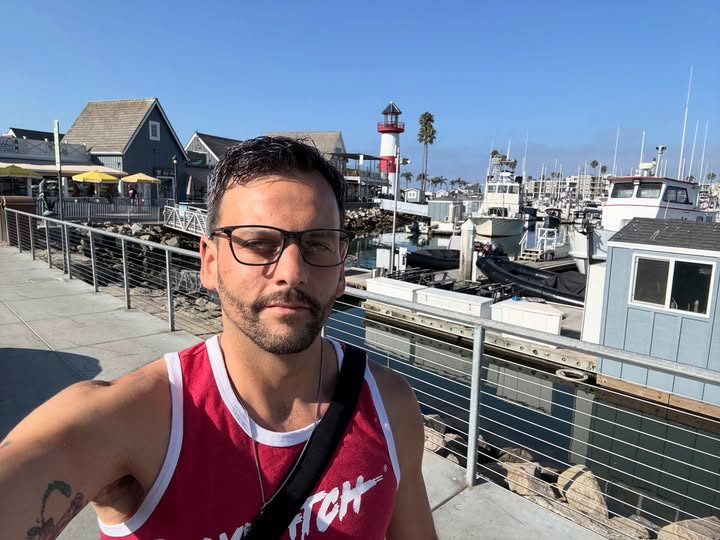

About the Artist

AJ Sousie
My name is AJ, and I’m the so-called brains of this operation. I’m what some would consider a multidisciplinary artist, but I think of myself as a Chaos Doodler with the ability to dissect and learn new art mediums and techniques then incorporate my own style.
I’ve always been a curious person that wants to learn how things work, whether I’m working in Graphic Design, Animation, Typography, painting or whatever’s tickling my fancy at the time. I enjoy experimenting with new mediums and techniques and figuring out different ways to combine them to see what I can make.
My professional background spans design, production, facilities, and industrial maintenance, but creating seemed to always be the thread running through all of it. These days I am putting that experience toward building a creative practice of my own through illustration, animation, design, and whatever weird idea comes next.